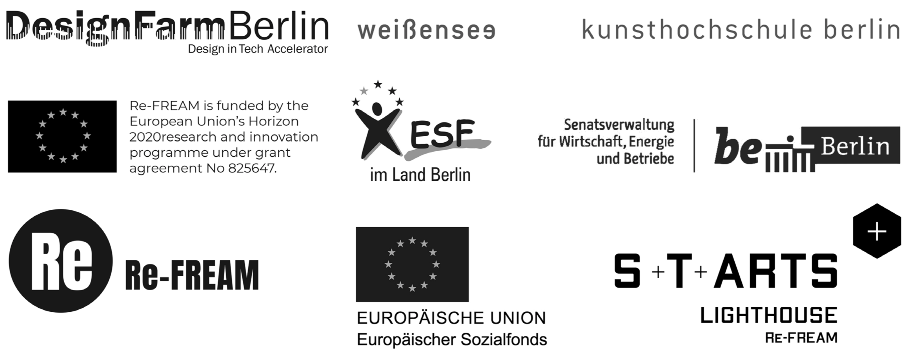

Biowaste
Banana and orange peel or soy-milk are combined with a natural binding agent as the substrate. The resulting composite is fully biodegradable and can be easily reused after the re-cooking process.
Repeel process
The bio-material provides similar toughness, durability and water resistance as normal leather material, especially it conserves fruitiness smell, refined texture and feels very good on touch.
Biowaste
Banana and orange peel or soy-milk are combined with a natural binding agent as the substrate. The resulting composite is fully biodegradable and can be easily reused after the re-cooking process.
Repeel process
The bio-material provides similar toughness, durability and water resistance as normal leather material, especially it conserves fruitiness smell, refined texture and feels very good on touch.
We are focusing on developing the potential of biowastes and algae, through technology and design, we effectively convert them into eco-friendly biodegradable material that possess both aesthetic qualities and unmatchable performance.
The material can be completely recycled and returned to the nature effortlessly, our expert team is making it happen. The versatility of Apeel is also unrivalled, it can fulfil the needs of different industries.
With
APeel, there is no limitation of single material. While the natural resource depleting in the world, APeel is becoming the bridge that connects people and nature.
SUPPORTED BY
